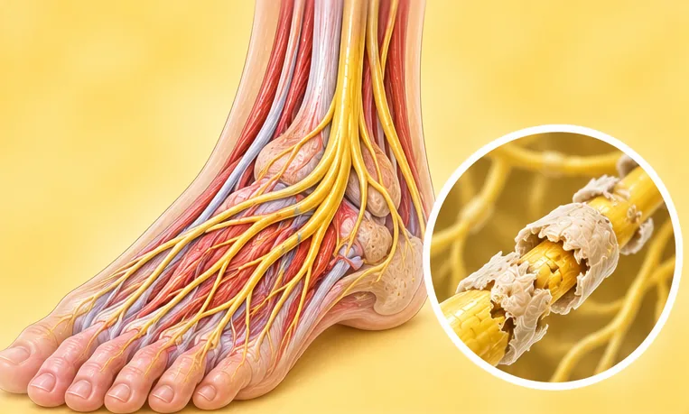

Lumpuh berkala
Serangan jarang berlaku kelemahan otot secara tiba-tiba yang datang dan pergi
Apa itu
Otot tiba-tiba menjadi sangat lemah untuk seketika, kemudian pulih. Ia biasanya berkait dengan cara otot mengendalikan garam seperti kalium.
- Lengan dan kaki
- Selalunya bermula semasa muda
- Otot lemah tiba-tiba
- Jumpa doktor
- Pakar saraf (neurologi), pakar endokrin
- Biasa pada
- Selalunya dalam keluarga; boleh juga bersama masalah tiroid
- Berjangkit
- Tidak
- Perjalanan
- Serangan datang dan pergi; doktor boleh membantu mencari pencetus dan pelan
Tanda biasa

Kaki terasa lemahKelemahan kaki
Tanda-tanda lain
- Serangan yang berlangsung beberapa minit hingga beberapa jam
- Kekuatan pulih antara serangan
- Serangan mungkin datang selepas berehat daripada bersenam, atau selepas makan banyak
- Otot kaku bagi sesetengah jenis
Mengapa ia berlaku

Diwarisi dalam keluargaKecenderungan genetik 
Perubahan hormonPerubahan hormon 
TekananTekanan psikologi
Punca lain
- Kalium rendah akibat penyakit atau ubat lain
Jumpa doktor dahulu jika
- Sukar bernafas atau menelan semasa serangan: hubungi 999
- Jantung berdegup laju atau tidak sekata, sakit dada atau pengsan: hubungi 999
- Serangan kelemahan mendadak kali pertama: ke hospital
- Kelemahan yang tidak hilang atau semakin teruk
- Serangan yang semakin kerap
Jika mana-mana berkenaan, sila jumpa doktor sebelum sesi.
Halaman ini ialah maklumat am. Sila terus mengambil ubat biasa anda dan terus berjumpa doktor.
Teruskan mengambil ubat biasa anda dan terus berjumpa doktor. Sesi kami ialah sokongan lembut dan tidak menggantikan rawatan perubatan.
Menjaga diri

Catat simptom andaDiari simptom 
Kekal aktif setiap hariAktiviti fizikal berkala
Lebih banyak cara menjaga diri
- Ikut nasihat doktor tentang pencetus dan ubat
- Elakkan hidangan sangat banyak dan bergula jika ia mencetuskan serangan
- Duduk atau baring dengan selamat apabila kelemahan bermula
Beritahu ahli terapi anda
- Kaki lemah
- Penyakit jantung
- Penyakit buah pinggang atau hati
- Kehamilan
- Perentak jantung atau implan logam
Ahli terapi anda akan menyemaknya bersama anda sebelum bermula.
Soalan dan jawapan
Apakah Lumpuh berkala?
Serangan jarang berlaku kelemahan otot secara tiba-tiba yang datang dan pergi. Otot tiba-tiba menjadi sangat lemah untuk seketika, kemudian pulih. Ia biasanya berkait dengan cara otot mengendalikan garam seperti kalium.
Apakah tanda biasa Lumpuh berkala?
Kaki terasa lemah
Mengapa Lumpuh berkala berlaku?
Diwarisi dalam keluarga · Perubahan hormon · Tekanan
Bagaimana menjaga diri dengan Lumpuh berkala?
Catat simptom anda · Kekal aktif setiap hari
Bolehkah sesi AI Body Master membantu Lumpuh berkala?
Sesi ialah sokongan meridian tanpa jarum yang lembut untuk kesejahteraan anda. Ia tidak merawat atau menyembuhkan Lumpuh berkala dan tidak menggantikan ubat atau doktor anda. Beritahu ahli terapi anda sebelum sesi bermula.
Keadaan berkaitan
- Penyakit Alzheimer
- Meningitis virus
- Ensefalitis virus
- Sindrom kaki resah
- Strok dengan pendarahan (infarksi hemoragik)
- Sakit kepala kluster
- Ensefalitis herpes simpleks
- Tekanan intrakranial rendah (hipotensi intrakranial)
- Koyak bahagian belakang meniskus (lutut)
- Meniskus haus (lutut)
- Kaki rata
- Kecederaan saraf brakial (saraf bahu dan lengan)
Rujukan: General information based on public health sources such as Mayo Clinic, NHS, Cleveland Clinic and NCBI StatPearls.
Halaman dikemas kini: 2026-11-04